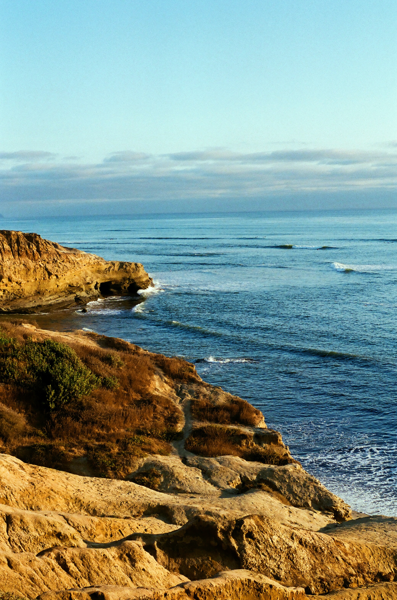
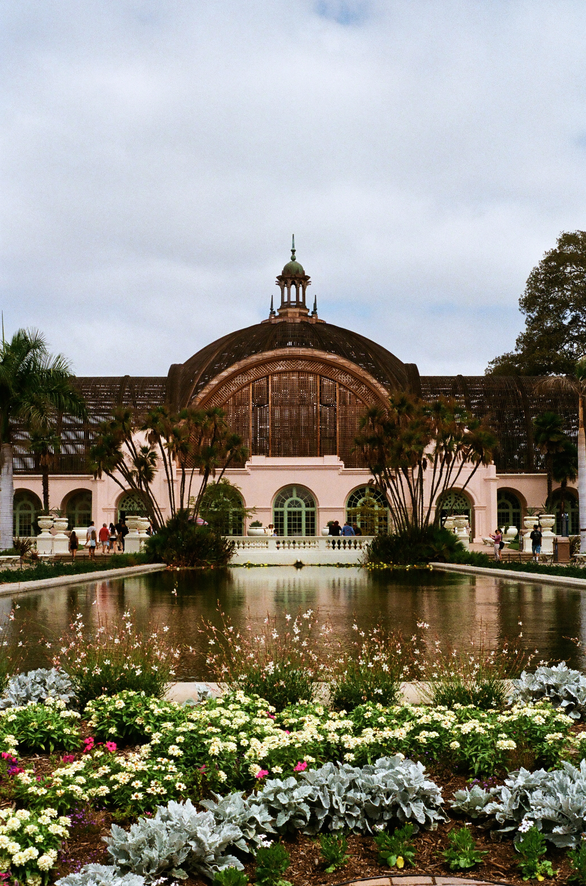
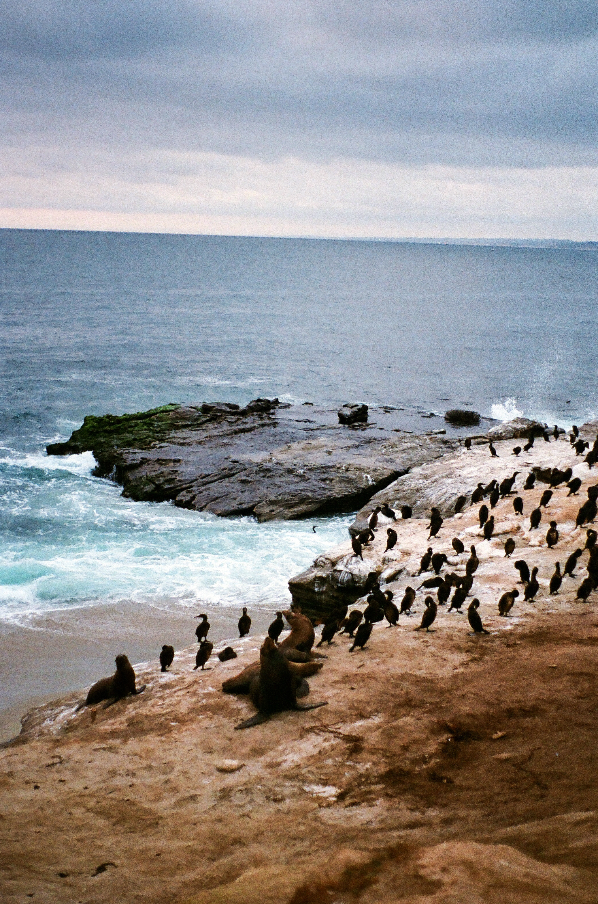
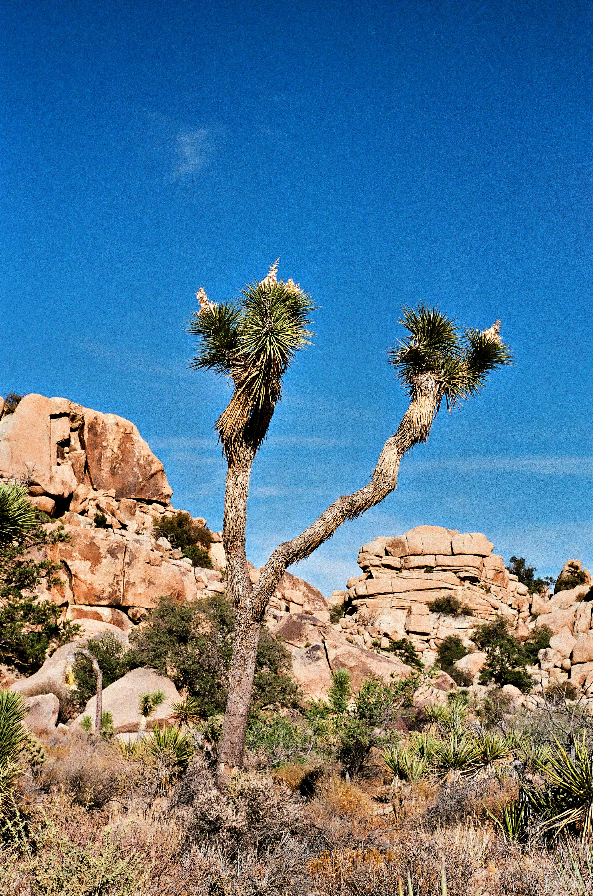
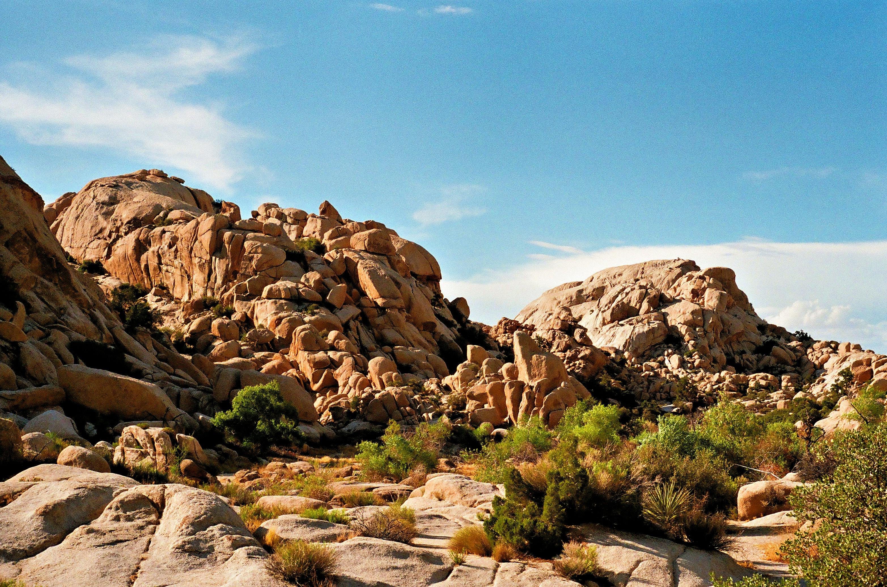
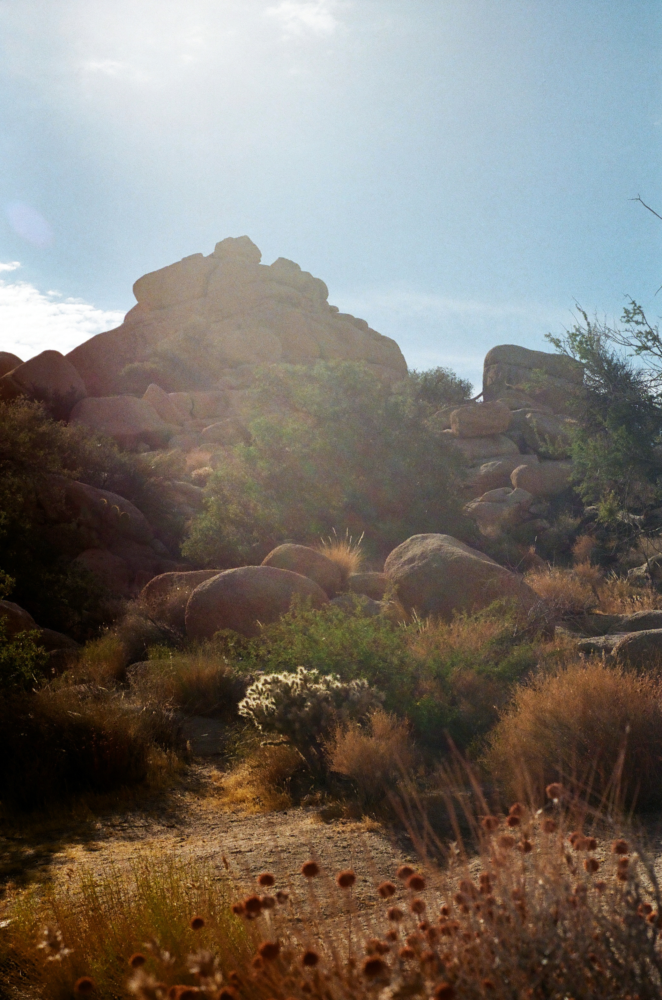
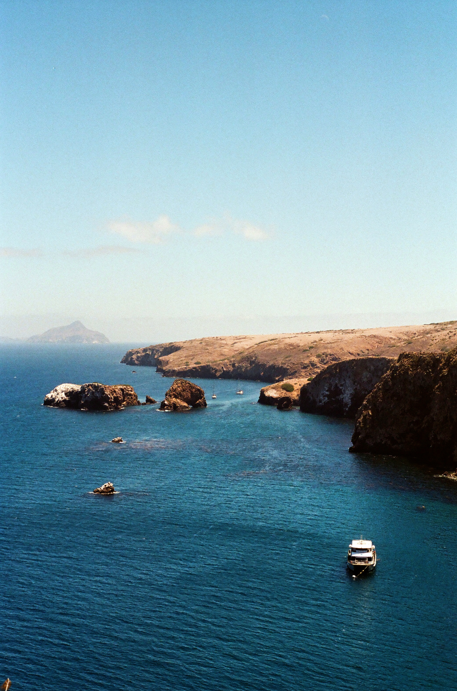
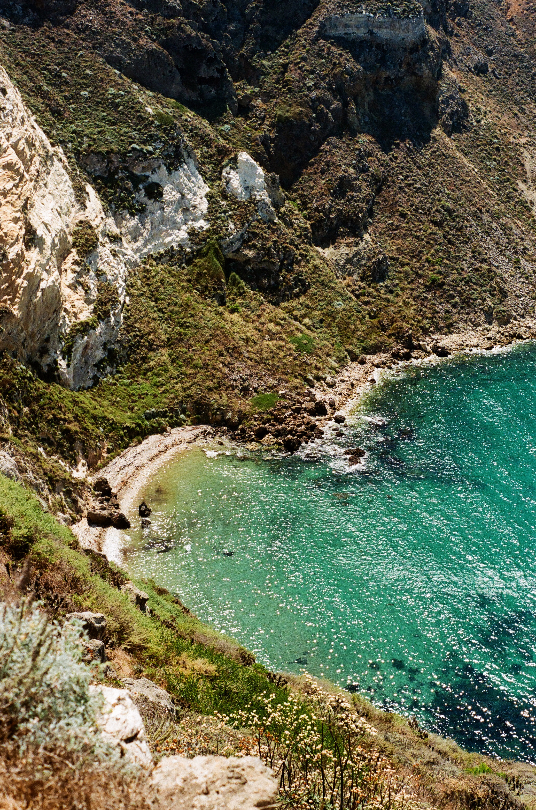
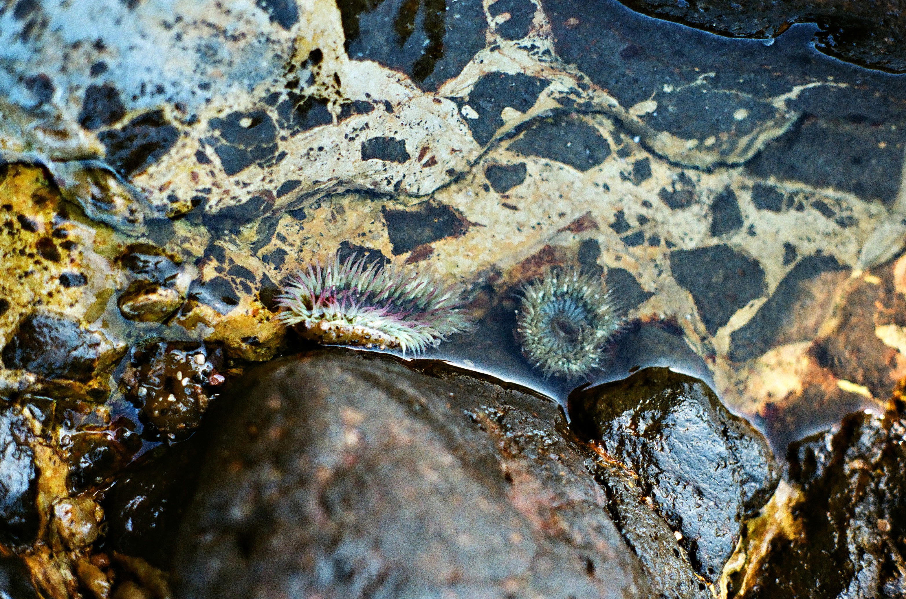

My California Adventure
California is a place I have always wanted to visit. On this trip, I got to experience three very different places: San Diego, Joshua Tree, and the Channel Islands. Each stop had its own unique scenery and things to explore.
San Diego
My first stop was San Diego. I enjoyed spending time near the ocean, exploring the city, and taking in the beautiful California weather. The weater was absolutely perfect. San Diego's highlights include Balboa Park, the San Diego Zoo, and Torrey Pines State Natural Reserve. San Diego was a fun way to begin this trip!



Joshua Tree
Next, I traveled to Joshua Tree. The desert landscape was unlike anything I've ever seen before. I enjoyed seeing the unique rock formations and Joshua trees throughout the park. The temperature was in the high 90s while we were there, but thankfully there was a breeze!



Channel Islands
My final stop was the Channel Islands. We took a ferry to Santa Cruz island and camped for the night. Santa Cruz offered beautiful ocean views and a peaceful, slow setting to relax in. There is an endemic species of fox here called the Channel Islands fox. They were very mischevious and my favorite part of the whole trip!



More Adventures to Come
California was just one of many places I hope to explore. Check out my bucket list to see where I would like to travel next!
View My Bucket List